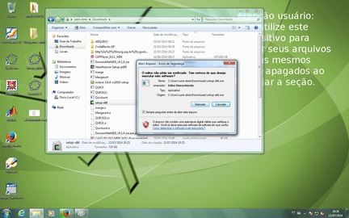
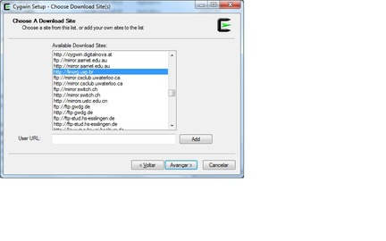
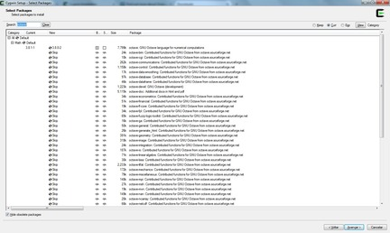
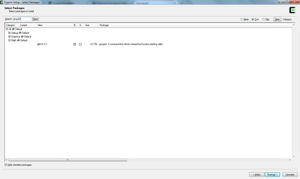

|
GNU Octave no Ubuntu
Para realizar esta tarefa você deve ser o administrador do
computador.
- Em um terminal, digite:
sudo apt-get install octave
- Confirme a instalação dos pacotes necessários.
- Após a instalação dos pacotes, digite
octave
ou, se quiser trabalhar com o Octave em uma janela estilo Matlab, digite
octave --force-gui
Existem muitas bibliotecas que podem ser instaladas no Octave,
permitindo uma infinidade de aplicações. Para consultá-las,
basta digitar o comando:
apt-cache search octave
|
GNU Octave no Windows - Tentativa 1
- Nesta página você pode verificar se possui o Java instalado no seu computador e instalá-lo, caso necessário.
- Faça o download do instalador do Octave para o Windows. Infelizmente a versão mais atualizada é a 3.6.4 (utilizamos a 3.8.1 no LabMac).
- Selecione a opção geral.
- Escolha o gnuplot como o renderizador de gráficos.
- Não se esqueça do local onde o Octave foi instalado!
- Faça o download do DomainMathIDE, que é simplesmente uma janelinha bonita para rodar o Octave.
- Na primeira vez que for utilizá-lo, ele vai dar um erro, dizendo que não encontrou o Octave. Você deve então fornecer o local onde está o executável do Octave.
|
GNU Octave no Windows - Tentativa 2
- Faça o download do CygWin.
- Execute o programa.

- Avance até chegar na tela de seleção do servidor de pacotes. Nesta hora, escolha o linorg.usp.br.

- Na próxima tela, você terá que escolher os pacotes a serem instalados. Digite octave na busca. Selecione o pacote com o mesmo nome, como mostrado abaixo.

Todos estes outros pacotes que aparecem são funções especiais para resolver uma inifinidade de problemas, tais como: matemática simbólica (como o Maple), estatística, otimização, programação paralela, etc. Caso tenha interesse em algum, selecione-o também.
- Digite gnuplot na busca e selecione-o para a instalação.

- Repita o processo com o pacote chamado xinit. Clique em avançar. Na próxima tela serão apresentados todos os outros pacotes que serão instalados, em complemento aos que você selecionou. Avance.
- Após a instalação, reinicie o computador.
- Entre no CygWin e digite
xinit
A sua tela vai piscar e um novo terminal vai aparecer.
- Clique nesse terminal e digite
octave
ou, se quiser trabalhar com o Octave em uma janela estilo Matlab, digite
octave --force-gui
|
{kind=link}
{kind=link}
{kind=link}
{kind=link}